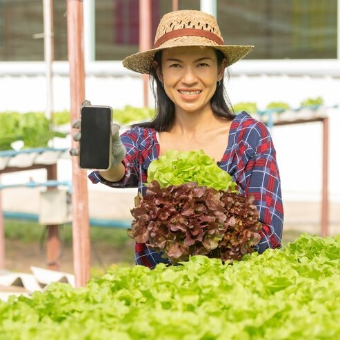
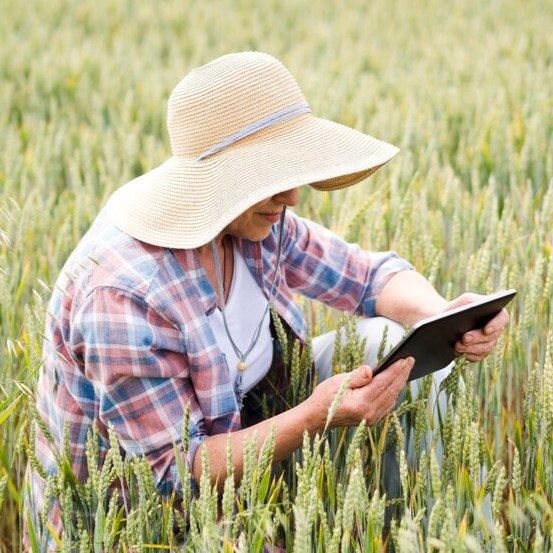

Tentang Kami
Harvesty adalah platform pertanian digital yang hadir untuk membantu petani dan pelaku agribisnis mengoptimalkan potensi hasil bumi Indonesia. Kami percaya masa depan pertanian berkelanjutan dapat tercapai dengan kolaborasi, inovasi, dan teknologi.



Kami berkomitmen menjadi jembatan antara teknologi dan pertanian, menghadirkan solusi digital untuk mempermudah akses informasi, pemasaran, dan layanan bagi petani di seluruh Indonesia.
Masuk Sekarang